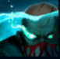
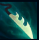
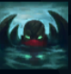
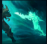
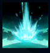

Pyke
| The Bloodharbor Ripper | |
|---|---|
| Release date | 31.05.2018 |
| Class | Assassin,Catcher |
| Positions | Middle,Support |
| Resource | Mana |
| Range type | Melee |
| Adaptive type | Physical |
| Base statistics | |||
| Health | 600-2130 | Mana regen | 415-1265 |
| Health regen. | 7-15.5 |
Mana regen. | 8-25 |
| Armor | 45-104.5 | Attack damage | 62-96 |
| Magic resist. | 32-53.25 | Crit. damage | 175% |
| Move. speed | 330 | Attack range | 150 |
Pyke era un renumit vânător cu harponul care-și ducea veacul pe Docurile Ucigașilor din Bilgewater. Când a fost înghițit de un pește gigantic, nu și-a găsit sfârșitul... ci s-a întors din abisuri, transformat pentru totdeauna. Acum, pândește pe aleile umede și întunecoase ale orașului său natal și-și folosește noile puteri supranaturale pentru a-i măcelări pe cei care se îmbogățesc pe spinarea altora, iar locuitorii din Bilgewater, care se mândreau cu talentul lor de a vâna monștri, devin ei înșiși prada unui monstru. |  |
DARUL SUFLETELOR INECATE Când Pyke nu este văzut de inamici, își regenerează daunele pe care le-a suferit recent din partea campionilor. În plus, Pyke nu poate primi viață maximă suplimentară provenită din nicio sursă, aceasta fiind transformată în schimb în daune din atac bonus. | ||
|---|---|---|---|---|
 |
HARPON DE OS Pyke poate înjunghia un inamic din fața sa sau poate trage un inamic spre el. | |||
 |
MAREA SPIRITELOR Pyke se camuflează și primește un bonus semnificativ la viteza de mișcare, care scade în timp. | |||
|  |
FLUX FANTOMATIC Pyke se năpustește și lasă în urmă o fantomă care va reveni apoi la el, amețind campionii inamici din calea ei. | |||
 |
MOARTEA DIN ADANCURI Pyke se deplasează instantaneu și execută inamicii cu viață scăzută, putând apoi să refolosească vraja și să îi ofere aur suplimentar unui aliat care a participat. |